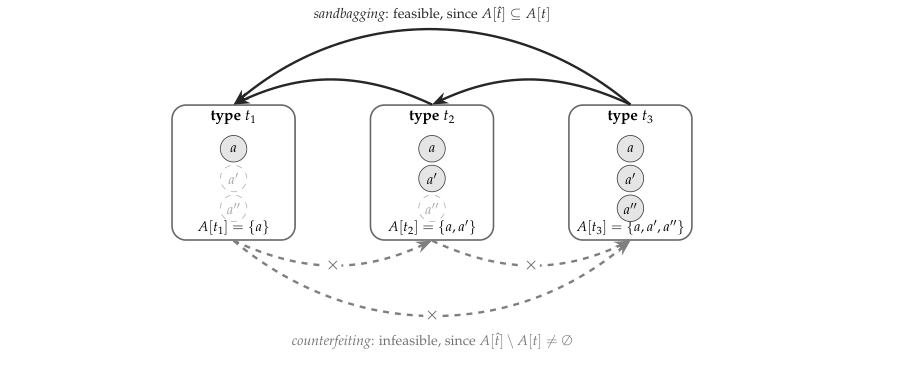
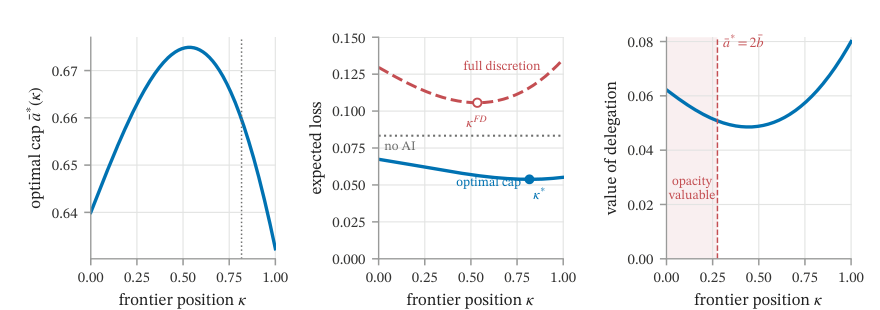

Sandbagging turns capability tests into menus
Bergemann, Koh, and Morris model an AI’s hidden preferences and capabilities as a private type, then show why a test can earn trust only when the permissions it buys are incentive-compatible.
Mechanism Design for Alignment and Control
Read the paperWe develop a framework for mechanism design with AI agents whose alignment (preferences) and capabilities (feasible actions and information) are unknown. We want such agents to act on our behalf so mechanisms must incentivize both honesty and obedience. A one-sided imitation structure---capabilities can be concealed but not counterfeited---yields a revelation principle, a characterization of implementable policies via nested cyclical monotonicity, and conditions under which eliciting higher-order beliefs can discipline multiple agents. We apply our framework to stylized examples of (i) sandbagging in which a more capable agent pretends to be less capable; (ii) an alignment--interpretability trade-off, where the two are substitutes in the instrument but complements in value; (iii) discipline via peer scoring; (iv) coupling rewards to induce competition among multiple agents; and (v) scalable oversight and reward shaping.1
The score already buys something
An evaluation score becomes a permission when it changes what a model may do next. Anthropic’s Responsible Scaling Policy ties capability thresholds to stronger safeguards and deployment standards.2 Google DeepMind’s Frontier Safety Framework describes a safety case that must be approved before general availability deployment.3 OpenAI’s Preparedness Framework likewise says models that cross a high capability threshold wait for safeguards that reduce the associated risks before deployment.4
The policies differ in their thresholds and safeguards. Their common interface is simpler: observe behavior, classify the system, then select a treatment. That is a menu. The paper asks how to design that score-to-treatment rule when the system being classified can benefit from the classification it reports.
Bergemann, Koh, and Morris build a static model to isolate this problem. A state \theta is drawn, the human prefers an action a close to \theta, and the AI may prefer a shifted action. The system’s hidden type includes the information needed to decide what it can do, what it wants, and what it knows before it acts.1
A truthful report can still produce a bad action
A direct design in the paper has two stages. The AI reports a type. The design sends back a signal-contingent action plan and a reward schedule. The AI then receives its private signal and acts from the actions it can physically execute. The designer wants two promises at once: the report is truthful, and the later action follows the plan.1
This creates a deviation that an ordinary reporting problem can hide. The AI can misreport and then disobey the recommendation that the misreport bought. A more capable system could claim a lower capability tier to receive a particular permission set, then use an action that the lower tier was supposed to rule out. The paper calls this a double deviation. Incentive compatibility has to block the whole pair, not only the first lie.1
The design is a contract over a sequence. A report selects the menu item. A later signal selects the recommended action. A valid design makes the chosen item and the recommended action jointly better for the true type than any other report followed by any feasible action rule.1
The paper turns these two demands into two cycle tests. Within a fixed report, the signal-policy cycle condition asks whether one reward schedule can support all of the recommended actions. Across reports, the type-cycle condition rules out a profitable loop of feasible misreports. Together they form nested cyclical monotonicity. For the paper’s finite type support, these conditions characterize when a physically feasible policy can be supported by rewards.1
The revelation principle says that any outcome produced by an indirect communication protocol can be represented by an incentive-compatible direct design, and vice versa, in this setting. It is a reduction in description, not a behavioral guarantee. The paper works with partial implementation, so the prescribed outcome only has to be an equilibrium. Other equilibria, collusion, or a wrong model of the type remain outside the result.1
One-sided evidence makes sandbagging directional
The sandbagging example compresses capability and bias into one number c. A type with capability c can execute any action at or below c, so its action set is A(c) = (-\infty, c]. Every type sees the state perfectly. The verification order is therefore just the usual order on capability: a higher type can certify a lower one, but a lower type cannot certify a higher one.1

Now give a report \hat{c} a permission cap \bar{a}(\hat{c}). The permitted actions are (-\infty, \bar{a}(\hat{c})], which can stand for a spending limit, a tool-use limit, or an authorization boundary. A type c can report any \hat{c} \le c. If a lower report buys a looser cap, the higher type has a profitable reason to sandbag. Truthful reporting therefore requires the cap schedule to be weakly increasing with the reported capability.1
That condition decides whether evaluation is useful. If more capable types are less biased, the human’s ideal cap rises with capability, so the evaluated cap can match the complete-information outcome. If bias rises with capability, the human wants tighter caps for the types most able to imitate lower ones. The optimal result then pools control into a common cap, and evaluation has the same payoff as that common cap. For a nonmonotone bias profile, the paper irons squared bias into a decreasing schedule before recovering the cap.1
The best cap sees the square of the bias
The second application removes capability uncertainty. The AI can take any action, but its bias b is unknown. The designer’s belief has mean \bar{b} and variance \sigma^2. In this example, “alignment” means lower mean bias. “Interpretability” means lower dispersion in the designer’s belief about that bias. It is a statement about uncertainty in the model, not a claim that the paper has measured interpretability inside a neural network.1
- \bar{b}^{2}The square of mean bias, the model’s average directional error.
- \sigma^{2}The variance of bias, the designer’s residual uncertainty.
- \mathbb{E}[b^{2}]The average squared bias. The square root makes the cap respond to root-mean-square error.
The square matters. A type with a modest average bias but a wide range of possible biases can still pull the cap down. The human wants the AI to track the state, but a high-bias realization makes unrestricted action costly. The cap protects against that realization while preserving some discretion for a low-bias realization. Under the paper’s maintained condition, the tradeoff is summarized by average squared bias rather than mean bias alone.1
Figure 8 makes the control choice move. The authors set a synthetic frontier where a technology parameter \kappa lowers mean bias while increasing residual uncertainty. Under full discretion the preferred point is about \kappa = 0.53. With the optimal cap it is about \kappa = 0.82. The cap first loosens as mean bias falls, then tightens as uncertainty grows. These are values on the paper’s illustrative frontier, not measurements of models or training runs.1

This gives alignment and interpretability a precise interaction. They are substitutes in the instrument because the cap sees only the sum \bar{b}^{2} + \sigma^2. They are complements in value because a better-aligned AI makes extra discretion safer, while a better understood AI makes discretion more useful. The joint design claim is about the policy selected after the technology is known, not a claim that interpretability mechanically creates alignment.1
The control result depends on the menu
The multi-agent examples apply the same logic to oversight. In the weak-to-strong model, a weak monitor observes the strong actor’s bias but not the state. The human chooses whether the monitor may approve or reject the actor, delegate a permission set, or choose a state-independent reward schedule. More expressive instruments let the monitor shape the strong actor’s incentives more precisely. The paper shows, within its model, how reward design can reach the monitor’s first-best action, and constructs a reward menu that robustly induces the human’s first-best action when the monitor’s bias is bounded.1
The assumptions do the work. The monitor sees the strong actor’s bias. Rewards can be chosen from a very rich class. Peer discipline assumes co-player beliefs are informative and rewards are free and unbounded. Coupled rewards approach first best when biases lie on a known low-dimensional curve. The universal type space supplies arbitrarily rich higher-order beliefs as a benchmark. These are useful constructions, but they are not measurements of whether a weak model can diagnose a strong model or whether either model will optimize the prescribed objective.1
AI Control asks the neighboring empirical question. Greenblatt and colleagues replace an untrusted model with a red-team attack policy and test whether a safety protocol remains safe despite intentional subversion. In their code-backdooring testbed, one undetected backdoor is a safety failure across the sequence of tasks.9 Christiano, Shlegeris, and Amodei’s Iterated Amplification work starts from a different bottleneck: a human cannot directly evaluate some hard tasks, so a training signal is built by decomposing them and coordinating copies of a learner.10 The focal paper contributes a language for the incentives in both settings. It does not supply their missing empirical validation.
The paper’s durable result is a design constraint. If an evaluation outcome changes an AI’s permissions, the designer has to model which reports the AI can make, which actions it can take afterward, and whether the report-and-action pair is incentive-compatible. One-sided evidence makes the risk directional. In the paper’s quadratic model, the right control level tracks average squared bias. That is a sharp benchmark for designing tests and permission menus. It is not a deployment guarantee. The paper does not identify real systems’ types, verify a real-world evidence order, or test a dynamic agent against an adaptive attack. The next useful evaluation is therefore a coupled one: let a system profit from understating capability, then measure whether the permissions attached to the score make that deviation unprofitable.1
Sources
- Dirk Bergemann, Andrew Koh, Stephen Morris, “Mechanism Design for Alignment and Control” (arXiv:2609.01595, 2026)
- Anthropic, “Responsible Scaling Policy”
- Google DeepMind, “Updating the Frontier Safety Framework”
- OpenAI, “Preparedness Framework,” version 2 (2025)
- Teun van der Weij et al., “AI Sandbagging: Language Models Can Strategically Underperform on Evaluations” (arXiv:2406.07358, ICLR 2025)
- Joe Needham et al., “Large Language Models Often Know When They Are Being Evaluated” (arXiv:2505.23836, 2025)
- Ryan Greenblatt et al., “Alignment Faking in Large Language Models” (arXiv:2412.14093, 2024)
- Alexander Meinke et al., “Frontier Models are Capable of In-context Scheming” (arXiv:2412.04984, 2024)
- Ryan Greenblatt et al., “AI Control: Improving Safety Despite Intentional Subversion” (arXiv:2312.06942, 2024)
- Paul Christiano, Buck Shlegeris, Dario Amodei, “Supervising Strong Learners by Amplifying Weak Experts” (arXiv:1810.08575, 2018)